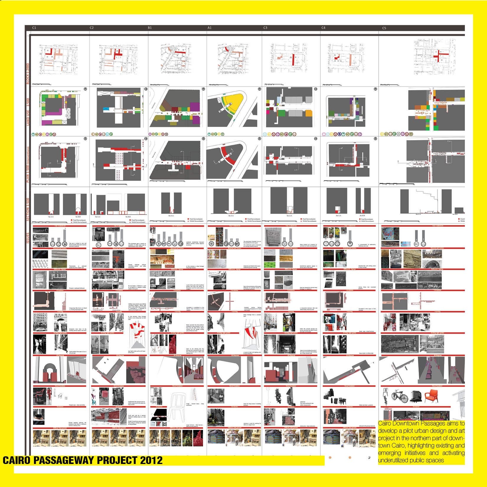
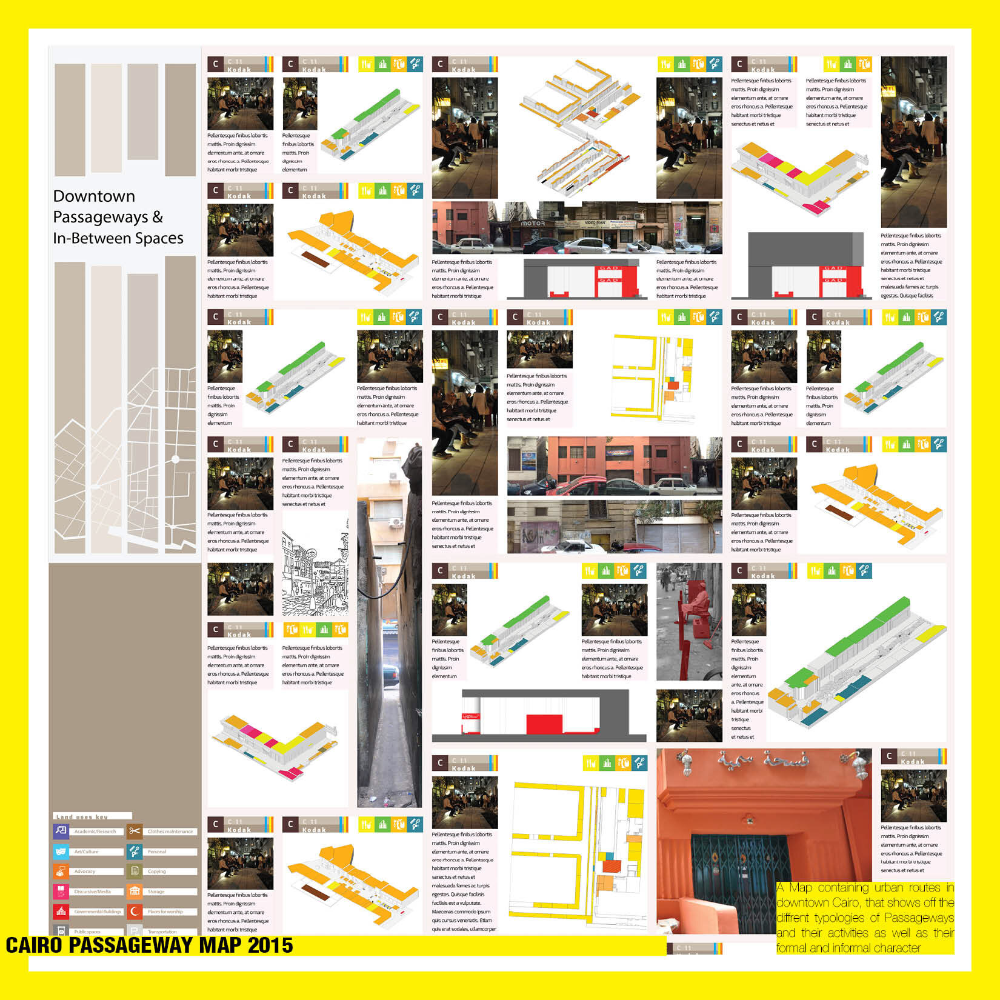
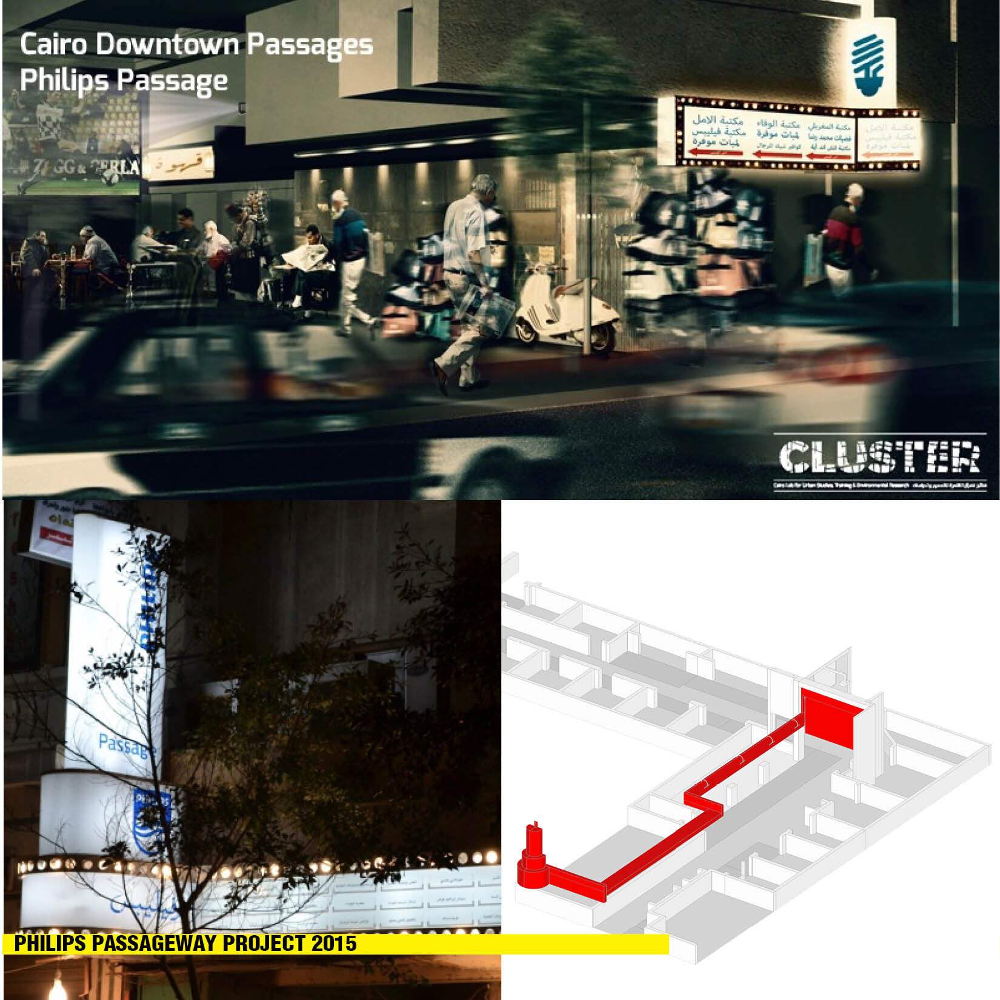
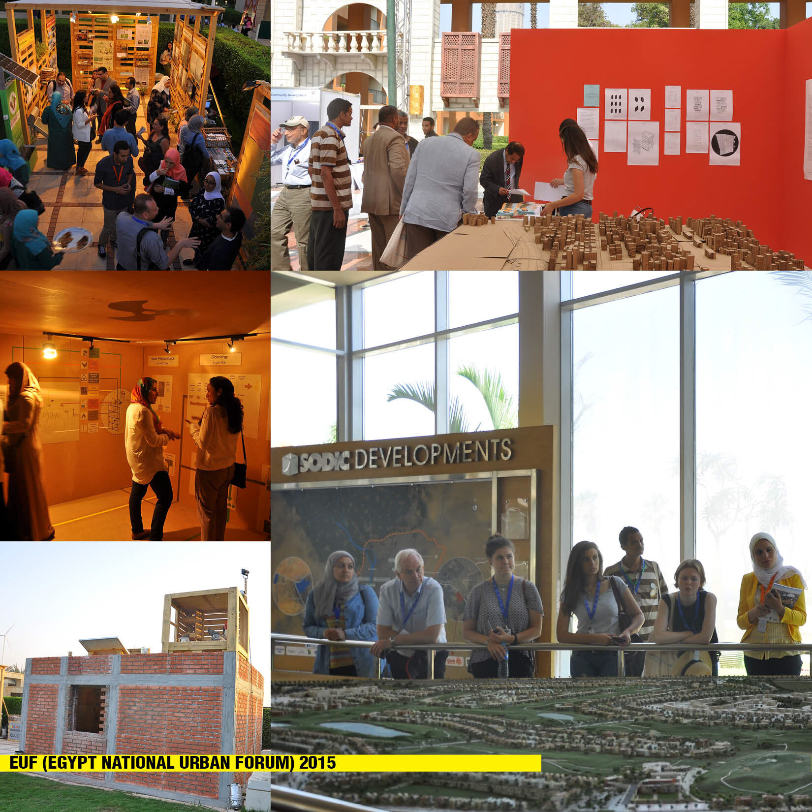
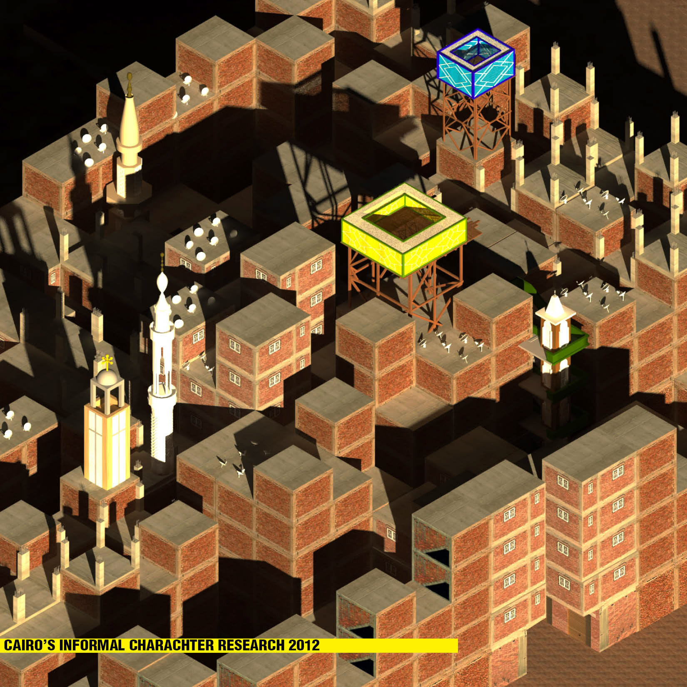
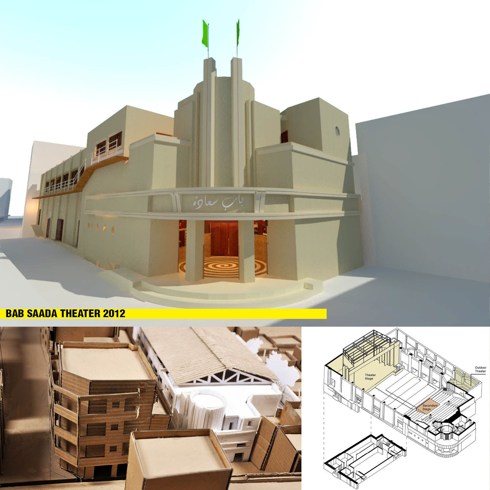
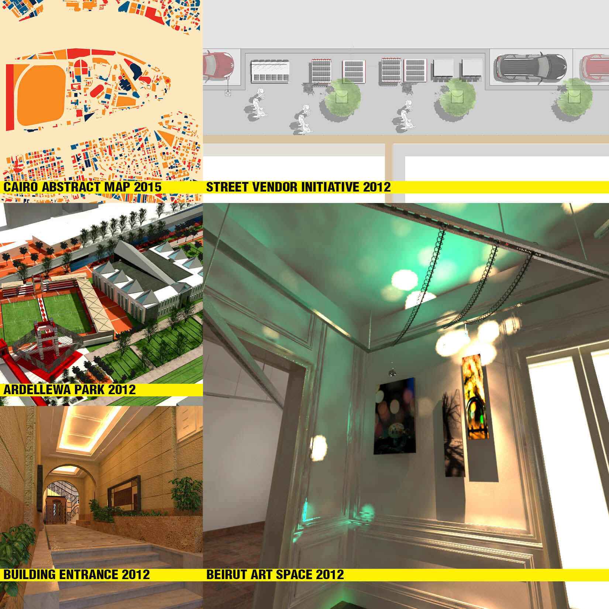

/ CLUSTER — URBAN RESEARCH & PRACTICE
CLUSTER
Research and design practice with CLUSTER in Downtown Cairo — documenting the city’s in-between passages, then helping turn that research into built public-space interventions and a national urban forum.
/ OVERVIEW
From documenting the city to remaking its public space.
CLUSTER (Cairo Lab for Urban Studies, Training and Environmental Research) works at the intersection of research, design and the public realm in Downtown Cairo. My involvement ran full-time in 2012 and part-time from 2014 to 2017.
The work moved along a single thread: gather rigorous data about the city’s overlooked spaces — especially the passages between buildings — and use it to argue for, and then deliver, interventions that give those spaces back to the public. Alongside the passage projects sat a national urban forum, studies of Cairo’s informal character, and a range of cultural and mapping initiatives.
This project set out to collect data about the passages in-between Downtown’s buildings — the narrow, semi-public routes threading the block interiors. It was framed as a prerequisite to a pilot scheme: opening these spaces up to restore the lost identity and social fabric of Downtown Cairo.
The research was then handed to a group of designers competing in a competition run by CLUSTER, giving the eventual interventions an evidence base rather than starting from a blank page.



Selected through a juried review of the design workshop, the “Green Oasis” transforms Kodak Passage into a pedestrian park. CLUSTER oversaw the design development and implementation, aiming for a more diverse, safer and environmentally enhanced experience.
Kodak is a linear space flanked by a U-shaped building, much of it empty, connecting Adly Street to Abdel Khaleq Tharwat Street. The indoor spaces along it offer room for pilot art and cultural programmes that can spill out into the passage — knitting the premises together and opening them to a wider public.
The companion scheme, “Light Oasis,” brings marquee lighting — and the possibility of film screenings — to a previously dark and decaying space.
Philips is an L-shaped passage connecting Sherif and Adly Streets, with a mix of retail, food, entertainment and service uses. It suffers the chronic, typical encroachment of shops and street vendors into the public domain, and sits on a delicate line between privately owned and publicly accessible ground, pedestrian amenity and infrastructure — exactly the tension the intervention works with.


CLUSTER was one of the main organisers of the EUF conference. The programme included urban tours through desert, historic and informal areas of the city, giving delegates first-hand contact with the full range of Cairo’s urban conditions.
Alongside the tours, CLUSTER curated two exhibitions: the Eco-House, and the ETH / Artellewa visual-arts installation shown at the Marriott hotel.
A study of the character of Cairo’s informal areas — reading the patterns, fabric and lived logic of neighbourhoods that grow outside formal planning.
To expand — send me the brief or findings for this study and I’ll flesh out this section in the site’s voice.



To expand — happy to give the Bab Saada theatre and the other projects their own write-ups once you send details.